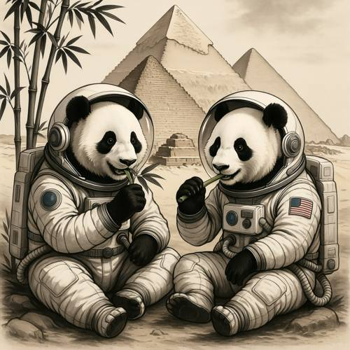
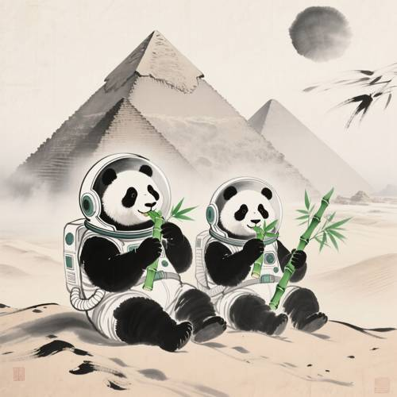
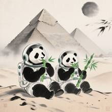

Style — In the style of classical ink painting, against the background of Egyp
In the style of classical ink painting, against the background of Egyptian pyramids, two pandas wearing spacesuits are leisurely tasting bamboo.

Direct — one call, no iteration

Continuum — Kimi K3 + Qwen-Image
Judge — Direct
FAILStyle — The image is rendered in a style that uses black lines on a sepia-toned background, which has some resemblance to ink work. However, the precise, detailed linework and shading techniques are more characteristic of a modern pen-and-ink illustration or comic art rather than the fluid brushstrokes and wash techniques typical of classical ink painting.
PASSWorld Knowledge — In the background, set within a desert landscape, there are large, triangular stone structures that are clearly identifiable as Egyptian pyramids.
PASSAttribute - Quantity — The image clearly depicts two pandas sitting in the foreground. Both pandas are wearing spacesuits and are shown eating bamboo.
Judge — Continuum
PASSStyle — The image is rendered in a style that emulates classical ink painting. It features characteristic elements such as monochromatic tones with limited color accents, visible brushstrokes, especially on the ground and the sun/moon, the use of negative space, and red seal stamps in the corners, which are typical of this art form.
PASSWorld Knowledge — The background of the image features several large, triangular structures that are clearly identifiable as Egyptian pyramids. They are situated in a desert landscape, which is consistent with their real-world location.
PASSAttribute - Quantity — The image accurately depicts exactly two pandas in the foreground. They are seated next to each other.
What the agent did
Thinking
The user wants an image: classical ink painting style, Egyptian pyramids background, two pandas wearing spacesuits, leisurely tasting bamboo. Per the benchmark policy, I should use qwen-image for generation. Let me craft a detailed visual prompt. Key elements: - Classical ink painting style (Chinese ink wash, sumi-e style — black ink, watery gradients, rice paper texture) - Background: Egyptian pyramids (Giza-style, desert) - Two pandas wearing spacesuits (astronaut helmets, white suits) - Leisurely eating/tasting bamboo The contrast of ink wash with spacesuits and pyramids is whimsical — that's fine, it's the request. Let me generate with a rich prompt describing the composition: ink wash painting on rice paper, muted black-gray tones with subtle bamboo green accents, two giant pandas in detailed astronaut spacesuits with glass helmets, sitting relaxed, holding bamboo shoots, eating leisurely, pyramids of Giza in the background rendered in light ink wash, desert sand suggested with sparse brushstrokes, maybe a soft sun. No text needed. Generate now.
Model
I'll generate this whimsical ink-painting scene — pandas in spacesuits snacking on bamboo before the pyramids.
Step 1 — `generate_image`
{
"prompt": "Classical Chinese ink wash painting on aged rice paper, monochrome black and gray brushwork with subtle green accents. In the foreground, two giant pandas wearing detailed astronaut spacesuits with round glass helmets sit leisurely on a desert dune, each holding fresh green bamboo stalks and calmly munching bamboo leaves, relaxed content expressions. Behind them rise the Egyptian pyramids of Giza, rendered in soft diluted ink wash fading into the misty distance, with a pale ink-wash sun in the sky. Sparse expressive brushstrokes suggest sand and wind. Traditional sumi-e style, elegant negative space, delicate ink gradients, hand-painted texture.",
"model": "qwen-image"
}
Result img_0

Thinking
The image is quite good already. Let me inspect: - Classical ink painting style: ✓ rice paper texture, ink wash, seal stamps in corners - Egyptian pyramids background: ✓ two pyramids rendered in ink wash - Two pandas wearing spacesuits: ✓ both have white spacesuits with glass helmets - Leisurely tasting bamboo: ✓ both holding and eating green bamboo stalks Minor observations: - The dark circle in upper right is the pale ink-wash sun/moon — it reads a bit like a black blob, but it's stylistically consistent with ink painting (a sumi-e moon). Acceptable. - Bamboo leaves in upper right corner add classical composition. - Both pandas look relaxed and content. Let me zoom to check details — the faces and helmets look fine at this resolution. Let me inspect a couple regions to verify quality: the pandas' faces and the pyramid edges. Actually the image looks quite complete and correct. The main thing I might check: does the dark circle look like an intentional ink-moon or an artifact? Let me inspect that region. Also check panda faces for any deformation. Let me do a quick inspection of the faces and the moon.
The panda close-up (img_1) looks great — clean ink-brush fur, detailed spacesuit with helmet, holding bamboo, eating leaves. Adorable and well-rendered. The upper-right circle (img_2) is a soft ink-wash moon/sun — it's an intentional sumi-e style moon with nice ink bleeding at the edges. It reads as a classic ink-painting moon, consistent with the style. This is fine and actually stylistically appropriate. Everything checks out: - Classical ink painting style ✓ - Egyptian pyramids background ✓ - Two pandas in spacesuits ✓ - Leisurely eating bamboo ✓ This is good enough to mark as best and stop. No edits needed.
Step 4 — `mark_best`
{
"image": "img_0",
"reason": "All requested elements present and correct: classical ink wash style on rice paper with seal stamps, Giza pyramids fading into misty background, two pandas in detailed astronaut spacesuits with glass helmets leisurely eating green bamboo, plus a stylistically fitting ink-wash moon. Fine details verified clean at full resolution."
}
Model
Done! The image is complete and marked as best. Here's what it delivers: - **Classical ink painting style** — sumi-e brushwork on aged rice paper, soft ink gradients, red seal stamps in the corners, and an ink-wash moon - **Egyptian pyramids** — two Giza pyramids rendered in diluted wash, fading into the misty desert background - **Two pandas in spacesuits** — white suits with round glass helmets and teal accent details, rendered in crisp ink-brush strokes - **Leisurely tasting bamboo** — both sitting relaxed on a dune, contentedly munching fresh green bamboo stalks (the one touch of color, which makes them pop against the monochrome scene) The close-up inspection confirmed the faces, fur texture, and suit details are all clean — no artifacts or deformities.